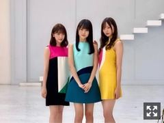

今日は嬉しいことがありました
みなさまこんにちは！
乃木坂46の
梅澤美波です！

週刊SPA！さまにて
未央奈さん、賀喜ちゃんと
表紙を努めさせて頂いております！
レトロな衣装で素敵だった〜〜
私が着させて頂いた衣装、
まあいいか？のMVで
真夏さん白石さんが着てらっしゃったものでした！！びっくりでした〜
とても素敵な衣装でした！
昨日、葉月が出演している
コジコジ観劇してきました！
楽しみにしていたので
観に行けて良かった〜
葉月の楽しそうな姿を見れて
それが何より嬉しかったです( ¨̮ )
子供心を思い出すような作品でした！
クスッと笑ってしまうシーンも
ライトアップされている訳では無い
さりげない台詞が心に刺さるシーンも
とにかく盛りだくさんで癒されたなあ。
これから観に行く皆様も
ぜひお楽しみに！！
懐かしの。
20歳のお誕生日おめでとう( ¨̮ )♡
告知させてください◎
▽８／２７ TBS系 23:58〜24:57
「テッペン！その他の人に会ってみた」
未央奈さんと出演させて頂きます！
ーー
▽８／２８ 「with」
ーー
▽８／２５ 文化放送 18:00〜18:30
「乃木坂46の『の』」
清宮レイちゃん、筒井あやめちゃん
▽９／１ 文化放送 18:00〜18:30
「乃木坂46の『の』」
桜井玲香さん、阪口珠美ちゃん
▽９／８ 文化放送 18:00〜18:30
「乃木坂46の『の』」
鈴木絢音さん、山崎怜奈さん
ぜひぜひチェックよろしくお願いします！
ついこの間まで
建て始めだった建物が
もう見上げるほど高くなっていました
こういったものを目にした時、
時の流れを感じます
早い、とてつもなく早い。
長いと思っていた一年も、
ちっとも長くなんてない、早い！！
寂しいなあ〜
もっと味わって過ごさないと
今年は物凄く暑い夏ですが
そんな夏ももう終わりに近づいていて
ここ最近は割と涼しくなってきて
暑いの苦手苦手と言いながらも
夏らしいことを何も出来ていない状況に
多少の寂しさを感じています、、
花火くらい、、観たいししたい( '-' )
そんなこと言いつつ
お店にはもう秋服がぽつぽつ現れ始め
もうすぐ近くまで来ている秋に心を持っていかれています。
秋冬って、
想像するだけでわくわくする。
思い切りがない人なので
中々一歩踏み出すのに時間がかかりますが
より濃い年にできるように
もっともっと楽しみたいなあ。
さてさて！
明日は幕張メッセにて
全国握手会があります！
私は第９レーンにて
お待ちしております。
ぜひ会いに来てね〜
またまた黒くしました。
またいつもみたく、
きっと一瞬で元通りです。
黒髪に似合うメイク考えながら
少しの期間楽しみます、ふふ
では、
おやすみなさい
今日はたくさん物を落とす日でした
拾っては落として
自分でも笑えてきました
Original：https://www.nogizaka46.com/s/n46/diary/detail/52257?ima=4943&cd=MEMBER